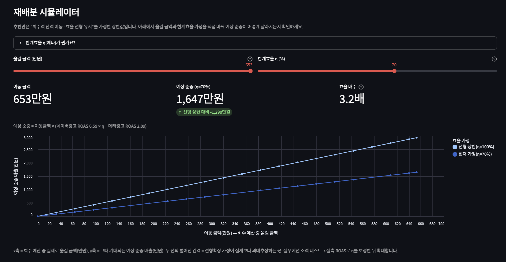

Automation · Marketing Analytics · Streamlit
마케팅 성과 리포트 자동화
& 의사결정 시뮬레이터
매주 반복되는 마케팅 성과 리포트 작성 과정을 Python 파이프라인으로 자동화하고, 계산 결과를 경영진 요약본·마케팅팀 상세본·의사결정 시뮬레이터로 확장한 프로젝트입니다.
범용 AI 리포트 생성기가 아니라, 정해진 마케팅 성과 스키마 안에서 입력 검증·지표 계산·이슈 탐지·채널 평가·렌더링을 반복 실행하도록 만든 도메인 특화 자동화입니다. CSV 상황에 따라 리포트의 판단 메시지와 후속 조치가 달라지도록 설계했습니다.
Problem Definition
문제 정의
매주·매월 반복되는 리포트 작성 업무를 시간·정확도·의사결정 속도의 문제로 재정의했습니다.
반나절 이상 걸리는 반복 리포트가 실행 판단까지 이어지지 않았습니다.
성과 CSV 정리와 지표 계산이 매 주기 반복되지만, 리포트가 채널 효율·이슈 원인·후속 조치까지 연결하지 못하면 인사이트 해석과 실행 판단이 다시 추가 분석과 회의로 넘어갑니다. ROI 순위 오판과 데이터 이슈 혼동까지 함께 검토해야 해 의사결정이 늦어지는 구조였습니다.- 반복 수작업매 주기 같은 정제·집계·요약 작업을 반복해 반나절 이상이 소요되고, 수식 오류와 문서 간 수치 불일치가 생기기 쉽습니다.
- 액션 부재총매출과 ROI를 나열해도 채널별 후속 조치가 정리되지 않아, 리포트가 바로 실행으로 이어지지 않습니다.
- 순위 오판이메일은 ROI 절대 1위지만 시장 벤치마크 대비로는 증액 우선순위가 아니어서, 절대순위만 보면 잘못 증액할 수 있습니다.
- 이슈 혼동이메일 매출 이상치와 네이버광고 매출 결측은 예산 손실이 아니라 데이터 수집·기록 확인 대상이므로, 예산 삭감과 분리해야 합니다.
Data & Approach
데이터와 접근방식
CSV를 넣으면 지표 계산, 이슈 분류, 채널 평가, 리포트 산출까지 한 번에 이어지도록 반복 업무를 자동화했습니다.
마케팅 성과 CSV 스키마를 표준 입력으로 정의
필수 컬럼을 검증하고, 필수 구조가 충족되지 않은 CSV는 초기에 중단해 잘못된 리포트 생성을 막았습니다.
입력 검증부터 리포트 생성까지 함수 단위로 연결
입력 데이터 검증, 지표 계산, 이슈 분류, 채널 평가와 리포트 출력을 각각 함수로 나누고 모든 산출물이 같은 결과값을 사용하도록 연결했습니다.
비정상 신호와 조치 대상을 분리
이상 신호를 데이터 확인, 운영 점검, 예산 검토 유형으로 나눠 리포트가 어떤 후속 조치로 이어져야 하는지 분류했습니다.
계산이 아니라 의사결정 흐름 구조화에 활용
계산과 판정은 Python으로 고정하고, AI는 문제 정의와 독자별 메시지 구조를 의사결정 문서 형태로 다듬는 데 활용했습니다.
자동화 범위: 같은 스키마의 새 마케팅 성과 CSV가 들어오면 동일한 절차를 반복 실행합니다. 전혀 다른 도메인의 CSV를 자동 해석하는 범용 리포트 생성기는 아니며, 이 제한을 의도적으로 명시했습니다.
01 입력 검증CSV 필수 컬럼과 8주 분석 범위를 확인해 리포트 기준을 고정
02 성과 지표 계산중복·결측·이상치를 정리한 뒤 ROI, ROAS, CPA, CTR, CVR 산출
03 조치 유형 분류급등·급락·결측·벤치마크 차이를 데이터, 운영, 예산 검토 이슈로 구분
04 실행 메시지 판단지속 중인 이슈는 조치로, 해소된 이슈는 사후 점검으로 분리
05 리포트 자동 생성같은 계산 결과로 경영진 요약본, 상세본, HTML, Streamlit 화면 생성
My Contribution
담당 업무
반복 리포트 업무가 실행 가능한 의사결정 문서로 이어지도록 문제 정의, 파이프라인 구현, 리포트 구조화, 검증과 문서화를 단독으로 수행했습니다.
문제 재정의
과제 요구사항을 단순 수치 요약이 아니라, 채널 상태와 후속 조치를 판단할 수 있는 의사결정 리포트로 재정의했습니다.
계산 파이프라인 구현
입력 검증, 지표 계산, 이슈 분류, 채널 평가, 리포트 출력을 함수 단위로 나누고 모든 리포트가 같은 결과값을 사용하도록 연결했습니다.
의사결정 흐름 설계
이상 신호를 데이터 확인, 운영 점검, 예산 검토로 분류하고 경영진용 요약과 마케팅팀용 실행 메시지를 분리했습니다.
테스트와 문서화
원본과 변형 데이터 6종으로 결측·중복·이상치·실행 메시지 분기 조건을 검증하고, 자동화 범위와 AI 활용 방식을 문서화했습니다.
Key Findings
핵심 결과
반복 리포트 자동화가 단순 수치 요약을 넘어, 채널 상태와 이슈 대응 우선순위를 판단할 수 있는 결과로 이어지게 했습니다.
Pipeline
보고서 1회 작성이 아니라 반복 실행 가능한 리포트 자동화 흐름을 만들었습니다.
같은 스키마의 CSV가 들어오면 입력 검증부터 지표 계산, 이슈 분류, 채널 평가, 리포트 생성까지 동일한 절차로 실행되게 했습니다.
882만원
메타광고에서 882만원 규모의 과거 예산 손실 신호를 탐지했습니다.
메타광고 과집행으로 발생한 기회손실 8,822,424원을 탐지하되, 최근 주차에서 해소된 경우 즉시 실행 조치가 아니라 사후 점검 대상으로 낮췄습니다.
Quality
데이터 오류와 운영 이슈를 실행 판단과 분리했습니다.
이메일 매출 이상치와 네이버광고 매출 결측은 예산 손실이 아니라 원본 확인 대상으로 분류해 잘못된 예산 삭감을 막았습니다.
Demo
검증용 CSV로 실행 메시지 분기가 달라지는지 확인했습니다.
최근 과집행이 지속되는 조건에서는 재배분안이 생성되어, 같은 파이프라인이 데이터 상황에 따라 다른 실행 메시지를 낼 수 있음을 검증했습니다.
2 Tracks
같은 분석 결과를 경영진용 요약과 마케팅팀용 실행안으로 나누었습니다.
경영진에는 전체 성과와 핵심 판단을, 마케팅팀에는 채널 진단과 조치 우선순위를 제공해 독자별로 다른 리포트 흐름을 구성했습니다.
Action Strategy
실행 전략
탐지 결과를 운영 점검, 데이터 확인, 예산 검토, 실험 검증으로 나누어 바로 실행 가능한 판단 기준으로 정리했습니다.
예산 검토메타광고 과집행은 최근 해소되어 사후 점검 대상으로 분류지속 중인 과집행이 다시 탐지될 때만 예산 이동 후보로 분류합니다.
데이터 품질 분리이메일 이상치와 네이버 결측은 데이터 확인 대상으로 분리성과 하락으로 단정하지 않고 수집·기록 오류 여부를 먼저 확인합니다.
시뮬레이터한계효율 η를 조정 가능한 가정값으로 제공같은 효율이 유지된다는 단순 계산과, 효율 저하를 반영한 보수적 결과를 비교합니다.
Result Preview
산출물 미리보기
같은 파이프라인이 실제 제공 데이터와 검증용 CSV에서 서로 다른 리포트 메시지를 생성하는 과정을 두 산출물로 나누어 보여줍니다.
제공 데이터: 실제 리포트 산출물
원본 CSV에서는 과거 메타광고 과집행을 탐지했지만, 최근 주차에서 해소되어 현 배분 유지와 사후 점검으로 판단했습니다.
검증 CSV: 실행 메시지 분기 검증
최근 과집행이 지속되는 검증용 CSV를 넣어, 같은 파이프라인에서 실행 메시지가 달라지는지 확인했습니다. 시뮬레이터는 이처럼 재배분안이 존재할 때만 활성화됩니다.
활성 재배분 데모 리포트
최근 과집행이 지속되는 조건에서 메타광고 회수 가능액 653만원을 네이버광고로 옮기는 1순위 재배분안과 순증 매출 상한 2,938만원을 자동 산출했습니다.
재배분 시뮬레이터
재배분안이 생성된 경우에만 활성화되며, 옮길 금액과 한계효율 η를 조정해 순증 매출이 유지되는 범위를 확인할 수 있습니다.
재배분 시뮬레이션 조건
시뮬레이터는 회수처·투자처·이동 가능액이 있을 때만 계산됩니다. 제공 데이터처럼 이동 가능한 예산이 없는 경우에는 표시하지 않고, 검증용 CSV처럼 재배분안이 생성된 경우에만 옮길 금액과 한계효율을 조정해 예상 순증 매출을 확인합니다.
입력 1회수 가능한 예산 중 옮길 금액
입력 2한계효율 η: 30–100%
출력예상 순증 매출
이동금액 × (투자처 ROAS × η − 회수처 ROAS)
이동금액 × (투자처 ROAS × η − 회수처 ROAS)

정본 유지: Markdown, HTML, Streamlit 산출물은 서로 다른 계산을 하지 않습니다. 공통 파이프라인의 결과값을 사용하고, 독자와 사용 목적에 맞게 표현 방식만 다르게 구성했습니다.
Learnings & Limits
배운 점과 한계
자동화 프로젝트로서 얻은 학습과, 실제 운영 자동화로 확장하기 전 보완해야 할 지점을 분리했습니다.
01
반복 리포트는 프로젝트 전반의 판단 기준까지 자동화해야 했습니다.
결측 처리, 이상치 탐지, 이슈 분류, 후속 조치 기준을 설계하고 코드로 고정했습니다.
02
같은 숫자를 독자별 리포트로 다르게 보여줘야 했습니다.
경영진 요약, 마케팅팀 상세 리포트, Streamlit이 같은 계산값을 쓰게 해 수치 불일치를 막았습니다.
01
입력 CSV 구조가 바뀌면 추가 설정이 필요합니다.
컬럼명, 채널 구성, 지표 정의가 달라지면 스키마 매핑과 벤치마크 기준을 다시 잡아야 합니다.
02
시뮬레이션 효과는 실제 집행 전까지 추정치입니다.
예상 순증 매출은 상한값이므로, 실제 운영 전에는 소액 테스트와 holdout 검증이 필요합니다.
Project Takeaway
프로젝트 핵심
반복되는 마케팅 성과 리포트 업무를 정제·계산·이슈 탐지·채널 평가·실행 판단·렌더링까지 이어지는 파이프라인으로 구조화한 프로젝트입니다. 같은 입력 구조의 CSV에서 리포트를 반복 생성하고, 데이터 상황에 따라 실행 메시지가 달라지도록 설계했습니다. AI는 계산이 아니라 문제 정의와 의사결정 문서 구조화에 활용했습니다.
Next Case
다른 케이스 보기
포트폴리오 요약으로 돌아가거나, 다른 프로젝트의 분석 과정을 이어서 확인할 수 있습니다.